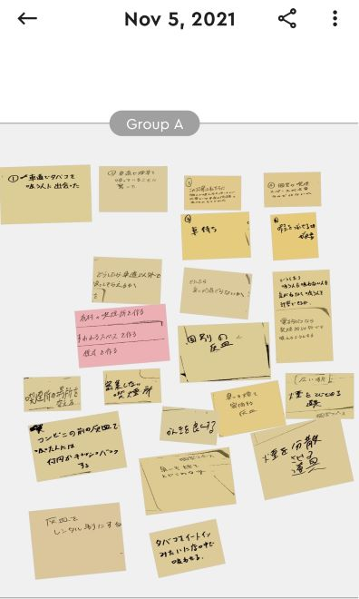

観察からのプロトタイピング
2班 対象：車道でたばこを吸っていた人
POV・HMW

・POVにもある通り私は、路上でたばこを吸っていた人は、近くに灰皿などのたばこの吸い殻を捨てるものがなく、排水溝などの場所に灰や吸い殻を捨てたかったのでは？と考えました。
スケッチ
プロトタイピングしたもの
・上に書いた通り、灰皿が無ければ、元々たばこを買ったときに携帯灰皿や携帯吸い殻入れが付属されていればよいのではと考え今回のプロトタイピングをしました。